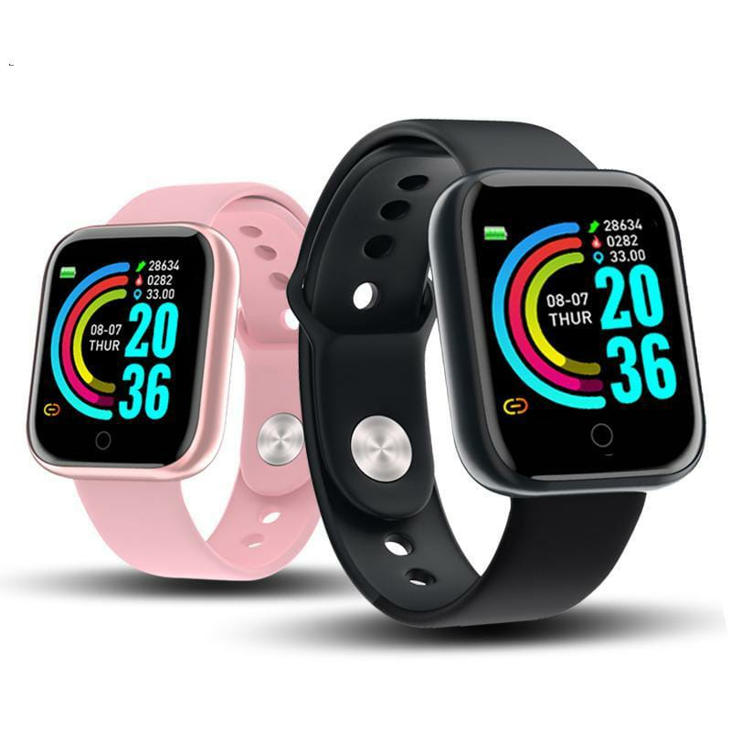

El Smartwatch D20 cuenta con Aplicación: FitPro Versión de Bluetooth: Bluetooth 4,0 Idiomas: Inglés, francés, italiano, japonés, coreano, polaco, portugués, ruso, chino simplificado, español, chino tradicional, etc. Resistente al agua/al agua: NO (no apto para nadar) Modo de funcionamiento: botón táctil (UN TOUCH en la pantalla) Tipo de pantalla: TFT LCD de 1,3 pulgadas De almacenamiento (FLASH)16MB + 128KB Compatible con OS: Android IOS Tiempo en espera: uso normal de 4-7 días; 30 días en función de 230mAh Funciones: deporte, Mensaje, despertador, oxígeno en sangre, fecha, medición de la frecuencia cardíaca, recordatorio de sedentarismo, gestión del sueño, tiempo Tipo de notificación: Facebook Twitter Wechat WhatsApp Tipo de alerta: Vibración
El Smartwatch DT PRO-88 cuenta con Protección al agua y polvo: IP68 Resistente salpicaduras de agua, lluvia. Nota: No usar en agua caliente. .ESPECIFICACIONES: 1. Bluetooth versión: 4.2 2. Compatible con Android 5.1 y mas recientes, iOS 8.0 y mas recientes. 3. Pantalla: 1.3 pulg. OLED Color Display. 4. Batería Interna de 180mAh. 5. Tiempo de espera aproximado de 7 días y duración en uso de 4 días. FUNCIONES: 1. Hora & Fecha en Pantalla 2. 3 interfaces de pantalla, 3. Aviso de Llamadas, SMS, Notificaciones de Whatsapp, Facebook y mas configurables 4. Monitor de Pasos, Distancia 5. Deportes: Caminar, correr, ciclismo, alpinismo, ping pong, tenis, básquet, saltar soga, yoga 6. Monitor de Ritmo Cardíaco Dinámico. 7. Monitor de Calorías 8. Estado del clima 9. Control de reproducción multimedia remoto 10. Otras Funciones al usar con la aplicación en el smartphone: Alertas programables, Recordatorio de Sedentarismo, Estadísticas de actividad y descanso. Aceptamos mercadopago y efectivo
El Smatrwatch G-500 cuenta con Aplicación: RD FIT Compatibilidad: Android & IOS Tipo de pantalla: IPS 2.5D full touch screen Tamaño de pantalla: 1.75 inch HD Resolución de pantalla: 320*385 Bluetooth: 3.0 y 4.0 Tipo de Batería: polímero de litio Capacidad: 220 mAh Modo de cárga: magnético Duración en espera: 2 días. Duración conectado: 1 día (dependiendo del uso personal), al usar todas las funcionalidades de una manera intensiva, la duracion de la bateria es de 12hs. Tiempo de carga: 2 hs aproximadamente. Grado impermeable: IP68 (no apto para su uso bajo la ducha con agua caliente ni exposición al vapor). Función: Notificaciones: SMS, WeChat, Email, Facebook y otras aplicaciones. Control de ritmo cardíaco 24/7. Monitoreo ECG. Podómetro: cuenta pasos, calorías quemadas y distancias realizadas. Recordatorio sedentario. Monitoreo del sueño. Modo multideportes. Termómetro. Buscador de teléfono. Control de música. Llamadas: admite llamadas Bluetooth con alta voz y micrófono.


El Smartwatch W26 Plus cuenta con Aplicación: Fundo Pro, M active Compatibilidad: Android & IOS Tipo de pantalla: IPS 2.5D full touch screen Tamaño de pantalla: 1.75 inch HD Resolución de pantalla: 320*385 Bluetooth: 3.0 y 4.0 Tipo de Batería: polímero de litio Capacidad: 220 mAh Modo de cárga: magnético Duración en espera: 2 días. Duración conectado: 1 día (dependiendo del uso personal), al usar todas las funcionalidades de una manera intensiva, la duracion de la bateria es de 12hs. Tiempo de carga: 2 hs aproximadamente. Grado impermeable: IP68 (no apto para su uso bajo la ducha con agua caliente ni exposición al vapor). Función: Notificaciones: SMS, WeChat, Email, Facebook y otras aplicaciones. Control de ritmo cardíaco 24/7. Monitoreo ECG. Podómetro: cuenta pasos, calorías quemadas y distancias realizadas. Recordatorio sedentario. Monitoreo del sueño. Modo multideportes. Termómetro. Buscador de teléfono. Control de música. Llamadas: admite llamadas Bluetooth con alta voz y micrófono. Alarma, cronómetro, control de brillo, etc.